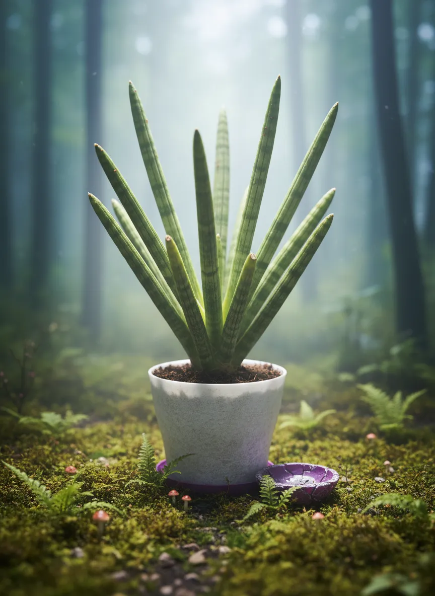
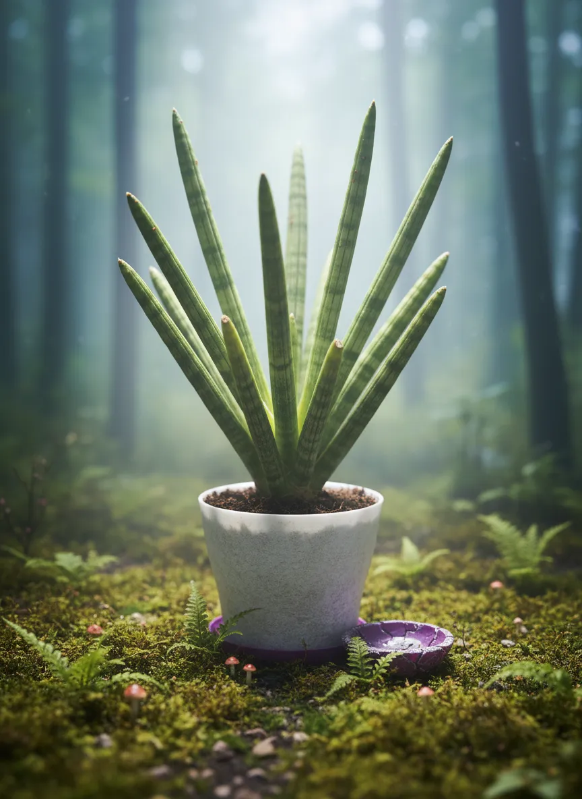

Alex Jobs


 

Particulars of the Botanic
| Custom Appellation | Alex Jobs |
| Latin Style | Dracaena angolensis |
| Health, verily | Fair |
| Measure | 30 |
| Domain | Livingroom window |
| Lamp Possess’d | Unknown |
| Vessel Kind | potPlastic |
| Earth | coconutCoirOrPeat |
| Vessel Size | 15 |
| Hath Drainage | Aye |
Schedule of Tendings
| Act | Last wrought | Next due |
|---|---|---|
| Watering | ||
| Feeding | - | |
| Re-vesseling | ||
| Purging | - | |
| Progress | ||
| Misting | - | - |